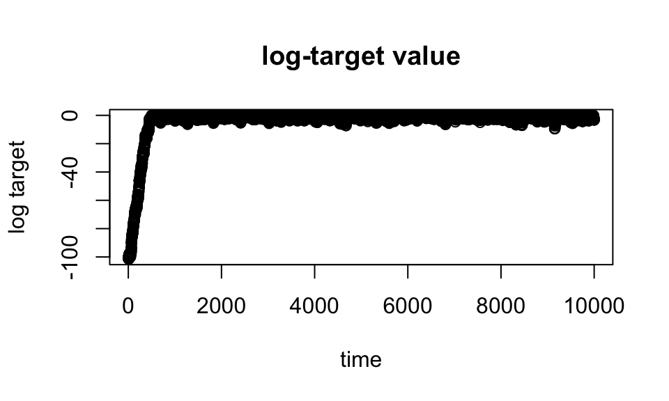
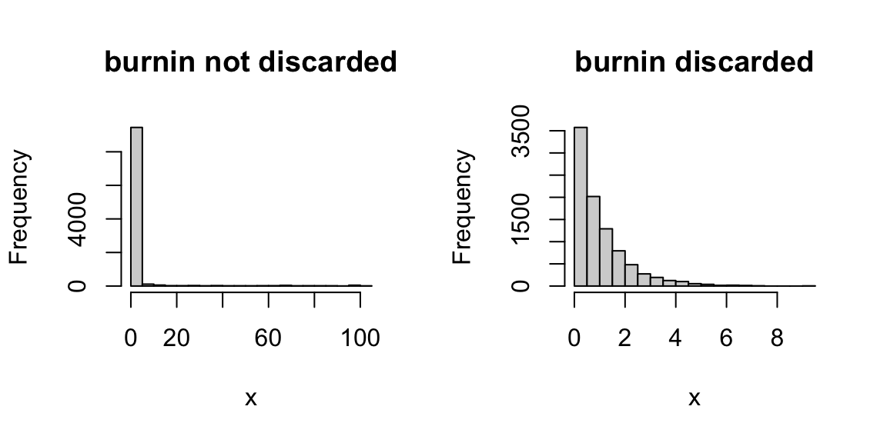

Last updated: 2026-01-23
Checks: 7 0
Knit directory: fiveMinuteStats/analysis/
This reproducible R Markdown analysis was created with workflowr (version 1.7.1). The Checks tab describes the reproducibility checks that were applied when the results were created. The Past versions tab lists the development history.
Great! Since the R Markdown file has been committed to the Git repository, you know the exact version of the code that produced these results.
Great job! The global environment was empty. Objects defined in the global environment can affect the analysis in your R Markdown file in unknown ways. For reproduciblity it’s best to always run the code in an empty environment.
The command set.seed(12345) was run prior to running the
code in the R Markdown file. Setting a seed ensures that any results
that rely on randomness, e.g. subsampling or permutations, are
reproducible.
Great job! Recording the operating system, R version, and package versions is critical for reproducibility.
Nice! There were no cached chunks for this analysis, so you can be confident that you successfully produced the results during this run.
Great job! Using relative paths to the files within your workflowr project makes it easier to run your code on other machines.
Great! You are using Git for version control. Tracking code development and connecting the code version to the results is critical for reproducibility.
The results in this page were generated with repository version 16519f3. See the Past versions tab to see a history of the changes made to the R Markdown and HTML files.
Note that you need to be careful to ensure that all relevant files for
the analysis have been committed to Git prior to generating the results
(you can use wflow_publish or
wflow_git_commit). workflowr only checks the R Markdown
file, but you know if there are other scripts or data files that it
depends on. Below is the status of the Git repository when the results
were generated:
Untracked files:
Untracked: figure/
Note that any generated files, e.g. HTML, png, CSS, etc., are not included in this status report because it is ok for generated content to have uncommitted changes.
These are the previous versions of the repository in which changes were
made to the R Markdown (analysis/MH_intro_02.Rmd) and HTML
(docs/MH_intro_02.html) files. If you’ve configured a
remote Git repository (see ?wflow_git_remote), click on the
hyperlinks in the table below to view the files as they were in that
past version.
| File | Version | Author | Date | Message |
|---|---|---|---|---|
| Rmd | 85cb907 | Peter Carbonetto | 2026-01-23 | Updates to MH_intro_02 vignette. |
| html | 76380cd | Matthew Stephens | 2022-04-26 | Build site. |
| Rmd | cf196e8 | Matthew Stephens | 2022-04-26 | workflowr::wflow_publish("MH_intro_02.Rmd") |
See here for a PDF version of this vignette.
You should be familiar with the basics of the Metropolis-Hastings algorithm.
In this vignette, we follow up on the original algorithm with a couple of points: (i) numerical issues that were glossed over, and (ii) a useful plot.
The key to the M-H algorithm is computing the acceptance probability, which recall is given by \[ A = \min \bigg\{ 1, \frac{\pi(y) \, Q(x_t \mid y)}{\pi(x_t) \, Q(y \mid x_t)} \bigg\}. \] In practice, both terms in the fraction may be very close to zero, so on a computer you should do this computation on the logarithmic scale before exponentiating, something like this: \[ \frac{\pi(y) \, Q(x_t \mid y)}{\pi(x_t) \, Q(y \mid x_t)} = \exp\big\{ \log\pi(y) - \log \pi(x_t) + \log Q(x_t \mid y) - \log Q(y \mid x_t) \big\}]. \] Furthermore, the log values in this expression should be computed directly, and not by computing them and then taking the log. For example, in our previous example we sampled from a target distribution, which was the exponential: \[ \pi(x) = e^{-x}, \quad x > 0. \]
Instead, we can directly compute \(\log\pi(x) = -x\). The code we had in that previous example can therefore be written as follows:
log_target <- function (x)
ifelse(x < 0,-Inf,-x)
x <- rep(0,10000)
x[1] <- 100
for (i in 2:10000) {
current_x <- x[i-1]
proposed_x <- current_x + rnorm(1)
A <- exp(log_target(proposed_x) - log_target(current_x))
u <- runif(1)
if (u < A)
x[i] <- proposed_x
else
x[i] <- current_x
}In practice, MCMC is usually performed in high-dimensional space. It can therefore be really hard to visualize directly the values of the chain. A simple 1-d summary that is always available is the log-target density, \(\log \pi(x)\). So you should usually plot a trace of this whenever you run an MCMC scheme:
plot(log_target(x),xlab = "time",ylab = "log target",
main = "log-target value")
Here the plot shows “typical” behaviour of MCMC scheme: because the starting point was not close to the optimal of \(\pi\), the chain initially makes large changes to find a part of the space where \(\pi(x)\) is “large”. Once it finds that part of the space, it starts to explore around the region where \(\pi(x)\) is large.
The plot in the previous section immediately shows that there is an initial period of time where the Markov chain is unduly influenced by its starting position. In other words, during those iterations the Markov chain has not “converged” and those samples should not be considered to be samples from \(\pi\). To address this, it is common to discard the first set of iterations of any chain; the iterations that are discarded are often called “burn-in”.
Based on the plot, we might discard the first 1,000 iterations or so as “burn-in”. Here are comparisons of the samples with and without burnin discarded:
par(mfrow = c(1,2))
hist(x,xlab = "x",main = "burnin not discarded")
hist(x[-(1:1000)],xlab = "x",main = "burnin discarded")
sessionInfo()
# R version 4.3.3 (2024-02-29)
# Platform: aarch64-apple-darwin20 (64-bit)
# Running under: macOS 15.7.1
#
# Matrix products: default
# BLAS: /Library/Frameworks/R.framework/Versions/4.3-arm64/Resources/lib/libRblas.0.dylib
# LAPACK: /Library/Frameworks/R.framework/Versions/4.3-arm64/Resources/lib/libRlapack.dylib; LAPACK version 3.11.0
#
# locale:
# [1] en_US.UTF-8/en_US.UTF-8/en_US.UTF-8/C/en_US.UTF-8/en_US.UTF-8
#
# time zone: America/Chicago
# tzcode source: internal
#
# attached base packages:
# [1] stats graphics grDevices utils datasets methods base
#
# loaded via a namespace (and not attached):
# [1] vctrs_0.6.5 cli_3.6.5 knitr_1.50 rlang_1.1.6
# [5] xfun_0.52 stringi_1.8.7 promises_1.3.3 jsonlite_2.0.0
# [9] workflowr_1.7.1 glue_1.8.0 rprojroot_2.0.4 git2r_0.33.0
# [13] htmltools_0.5.8.1 httpuv_1.6.14 sass_0.4.10 rmarkdown_2.29
# [17] evaluate_1.0.4 jquerylib_0.1.4 tibble_3.3.0 fastmap_1.2.0
# [21] yaml_2.3.10 lifecycle_1.0.4 whisker_0.4.1 stringr_1.5.1
# [25] compiler_4.3.3 fs_1.6.6 Rcpp_1.1.0 pkgconfig_2.0.3
# [29] later_1.4.2 digest_0.6.37 R6_2.6.1 pillar_1.11.0
# [33] magrittr_2.0.3 bslib_0.9.0 tools_4.3.3 cachem_1.1.0